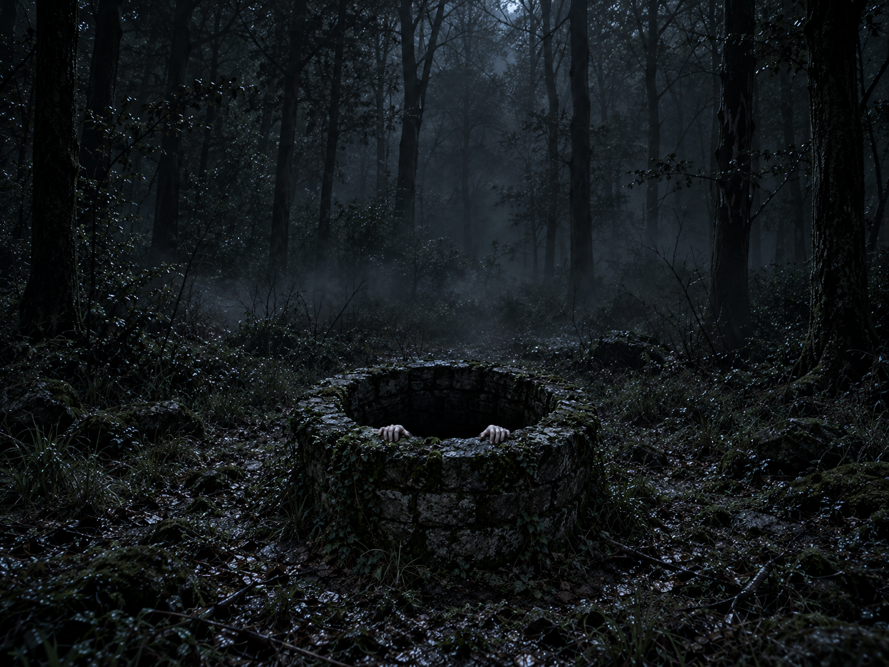

Search
The joystick maps X and Y readings to the flashlight’s position on the 800 × 600 screen.

A PHYSICAL INTERACTION. A DIGITAL NIGHTMARE.
Some things are better
left in the dark.
01 / THE IDEA
Well is an interactive jump-scare game that turns a physical controller into a flashlight in a night-time forest.
Move through the darkness, change the size of your beam, and search for a hidden well. Press the joystick when the light reaches it. A ghost appears, reaching out of the scene. A separate button returns you to the forest.
The inspiration is the iconic moment in the Japanese film Ring (午夜凶铃) when Sadako crawls out of a television. I wanted to translate that crossing of boundaries into an interaction: the player chooses to investigate, and the image suddenly feels much too close.
02 / DOCUMENTATION
03 / THE INTERACTION
The joystick maps X and Y readings to the flashlight’s position on the 800 × 600 screen.
The potentiometer changes the beam diameter from 100 to 400 pixels. A smaller beam hides more of the forest; a larger one reveals more context.
Press the joystick’s built-in switch while pointing at the well to reveal the ghost.
Press the separate large button to dismiss the ghost and return to the flashlight view. The current flashlight position and size are retained.
THE FEAR IS IN WHAT YOU CANNOT SEE.
04 / DESIGN DECISIONS
My first version revealed the forest through a clean, sharply defined circle. It was functional, but the edge felt too regular and lacked the atmosphere and transition I wanted. With Codex assistance, I added a gradual fade around the beam.
The ghost is triggered by a new joystick press inside a rectangular well region, rather than simply moving over it. The search builds anticipation; the press becomes the player’s decision to investigate.
The independent reset button makes the interaction repeatable for a classroom showcase. It clears the scare state immediately, ready for another exploration.
05 / UNDER THE SURFACE
The ESP32 reads the joystick axes, joystick switch, potentiometer, and separate button. It sends a comma-separated line over USB serial at 9600 baud every 100 ms:
x,y,joystickSwitch,potentiometer,resetButtonProcessing accepts complete lines with five fields, maps the analog readings from 0–4095 into screen coordinates and beam size, and uses a boolean scare to switch between the forest and ghost images. Both sketches build on the professor’s Lab 2 sample code.
For each screen pixel, the sketch calculates its distance from the flashlight center. The inner 60% of the radius keeps the original image. Across the outer 40%, the fade increases from 0 to 1. lerpColor() blends each forest pixel toward black, and everything beyond the radius stays dark.
This is a spatial fade around the beam, not a timed animation. The iteration focused on replacing my hard-edged circle with a softer transition that better supports the horror atmosphere.
float d = dist(x, y, lightX, lightY);
float radius = lightsize / 2.0;
float fade = constrain(
map(d, radius * 0.6, radius, 0, 1),
0, 1
);
pixels[i] = lerpColor(
well.pixels[i], color(0), fade
);boolean onWell = lightX > 250 && lightX < 550
&& lightY > 320 && lightY < 520;
if (z == 0 && press == 1 && onWell) scare = true;
if (button == 0) scare = false;
press = z;Tracking the previous switch value detects a transition from released (1) to pressed (0). The reset button is checked after the trigger, so reset wins if both are pressed.
06 / THE PHYSICAL BUILD

ESP32 TTGO T-display · joystick with switch · potentiometer · separate button · breadboard · jumper wires · wired USB power and serial connection.
| Connection | ESP32 GPIO |
|---|---|
| Joystick X / Y | 39 / 32 |
| Joystick switch | 33 |
| Potentiometer wiper | 27 |
| Reset button | 2 |
| LED output in sketch | 15 |
Pin assignments are documented from the submitted code. A Fritzing circuit diagram has not yet been supplied; the photograph and pin table do not replace that required deliverable.
07 / AI & REFERENCES
Tool & model: Codex, GPT-6.1 Sol light, as recorded by the project author.
I used this tool to generate the forest/well background and ghost image, and to help develop the flashlight’s fade function. My original beam had a hard circular boundary; the AI-assisted revision introduced the softer edge shown in the final sketch.
Prompt examples — reconstructed summaries, not saved verbatim prompts:
“Create a gloomy forest at night with a stone well, for the background of an interactive horror game.”
“Create a frightening image of a female ghost crawling out of the well toward the viewer.”
“Help me change the hard-edged circular flashlight in Processing into a beam with a gradual fade into darkness.”
The original prompt history was not provided. Replace these reconstructions with actual prompt excerpts if available.
References: the Sadako television scene in Ring (午夜凶铃); the professor’s Lab 2 Arduino and Processing sample code.

08 / REBUILD THE EXPERIENCE
The Arduino sketch, Processing sketch, image assets, wiring notes, and setup instructions live together in the project folder.
VIEW PROJECT ON GITHUB ↗